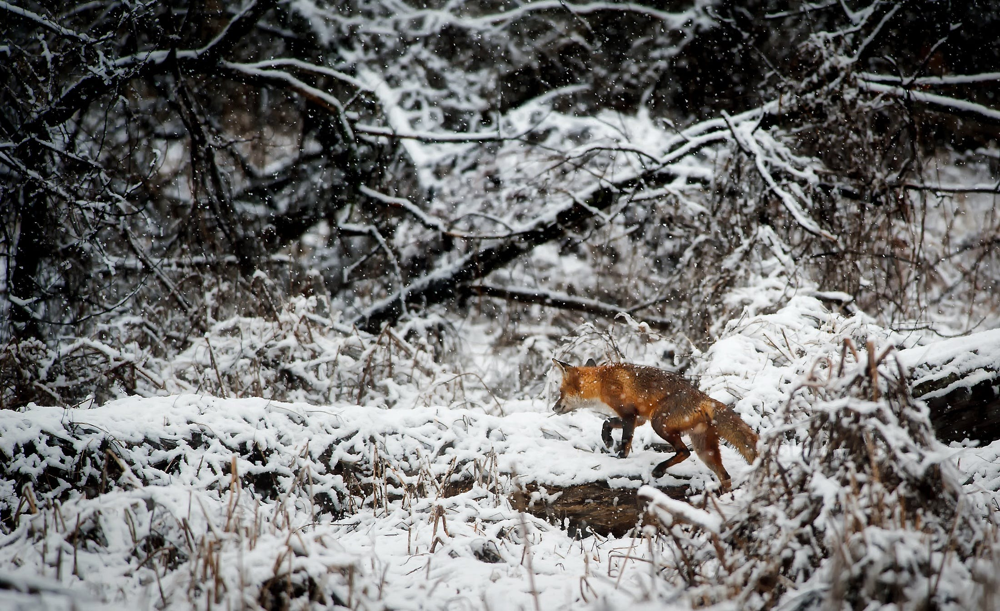

Get involved in how you can make a change for the wild animals.
We would not have come far if it was not for the engagement shown by the people.
Therefore, we want to continue to focus on what activities you can take a part in to help the cause.
Here you may read up on what you can do in order to support the wildlife and our work.

A red fox in winter landscape
Become a member
Support Saving Wildlife's work by becoming a member! We depend on support
from members to be able to push forward political changes for the animals.
Your contribution is valuable - support by becoming a member here.
In addition, invite friends, family and acquaintances to become members.
Spread information
Help us spread information about wild animals. It is important that more people find out about our website,
and get information about the vulnerable position of wild animals in Norway. Therefore feel free to hand out flyers
and hang up our posters for the animals - this can be ordered free of charge. Also remember to talk to friends and acquaintances
about the situation for the wild animals.
Influence the politicians
Help us push politicians to take the protection of wild animals seriously. Feel free to send an e-mail to your local politicians,
as well as to politicians from your home town or your party sitting in the Storting, and
demand that they pay more attention to the wild animals. Also contact the parliamentary parties directly and
urge them to distance themselves from the exploitation of wild animals.
Help wild animals locally
Help the animals around you! There are many things one can do to help the animals. How about setting up bird boxes,
hedgehog houses or insect hotels? Many animals also need extra food, especially during the winter months.